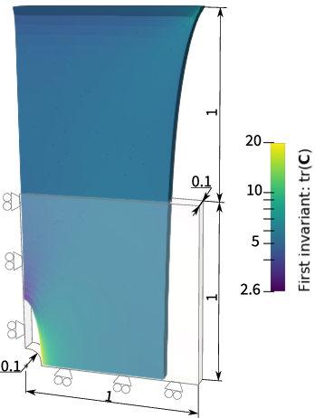
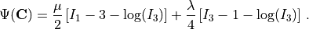
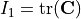
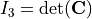

Hello world: running a simulation without an NCM
This first example is designed to give users a simple first exposure to the input file interface – it can be thought of as a ‘’hello world’’ equivalent. The learning outcomes are as follows:
First exposure to the COMMET input file schema
Using built-in meshes
Defining traditional (not NCM) hyperelastic material models
Defining Dirichlet boundary conditions
Choosing field outputs
Example files
The files for running the example can be downloaded as a single zip file here and it contains the following files:
Problem definition
We simulate a square plate with a hole in its centre and utilize quarter-symmetry. The problem is displayed schematically in the figure below.
{kind=link}

The plate consists of a Neohookean material with the following strain energy density function

Here,  and
and  are material parameters, and
are material parameters, and

and
.The input file
COMMET uses JSON (or JSON with comments) for input files – the file extension “*.json” denotes a standard JSON file whereas “*.jsonc” denotes JSON with comments. In each input file, there are several sections that may be defined. The sections that are defined in this example are mesh, materials, stages, and outputs.
The input file to define the problem is shown below with explanatory comments.
1 {
2 // Defining the mesh
3 "mesh": {
4 // Indicating that we will use a built-in mesh (not reading one in from file)
5 "from": "built-in",
6 // The type of built-in mesh that we will use
7 "type": "quarter_plate_with_hole",
8 // The order of the finite elements to use
9 "order": 1,
10 // Radius of the hole in the plate
11 "radius": 0.2,
12 // Length of the plate
13 "length": 1,
14 // Thickness of the plate
15 "thickness": 0.1,
16 // The number of times to refine the mesh of the geometry in-plane
17 "planar_refinements": 1,
18 // The number of times to refine the mesh of the geometry globally (through the thickness and in-plane)
19 "global_refinements": 1
20 },
21 // Defining the materials
22 "materials": [
23 {
24 "id": 0, // The id of the region for which this material applies
25 "type": "traditional", // Either "traditional" or "ncm"
26 "elasticity": { // Defines the elastic portion of the behaviour
27 "type": "neohookean",
28 "mu": 77,
29 "lambda": 115
30 }
31 }
32 ],
33 // Defining the boundary conditions to be applied over time
34 "stages": [
35 {
36 "end_time": 1,
37 "time_increment_size": 0.1,
38 "dirichlet_boundary_conditions": [
39 {
40 "type": "standard", // Either "standard" or "pull_twist"
41 "boundary_id": 1, // The id of the boundary to which this condition applies
42 "components": [0], // The components (0->x, 1->y, 2->z) of the displacement to be prescribed.
43 "values": [0] // The values of the prescribed displacement. Must have the same number of entries as "components"
44 },
45 {
46 // Similar to above
47 "type": "standard",
48 "boundary_id": 2,
49 "components": [1],
50 "values": [0]
51 },
52 {
53 // Similar to above
54 "type": "standard",
55 "boundary_id": 3,
56 "components": [2],
57 "values": [0]
58 },
59 {
60 // Similar to above
61 "type": "standard",
62 "boundary_id": 4,
63 "components": [0, 1, 2],
64 "values": [1, 0, 0]
65 }
66 ],
67 "neumann_boundary_conditions": [],
68 "robin_boundary_conditions": []
69 }
70 ],
71 // Defining the fields to be output
72 "outputs": {
73 "scalar_outputs": ["I1"], // Scalar fields to output (here I1=\tr(C))
74 "vector_outputs": [ ], // Vector fields to output
75 "tensor_outputs": ["kirchhoff_stress", "C" ] // Tensor fields to output
76 }
77 }
Running the simulation
If you are using docker, you can run the example by going to the directory containing the input file and running
$ docker run --rm -v ./:/data -w /data commetcode/commet_solve mpirun -n <n_procs_to_use> commet_solve hello_world.jsonc
If, instead, you have build COMMET locally and it is in your path, you can run
$ mpirun -np <n_procs_to_use> commet_solve hello_world.jsonc